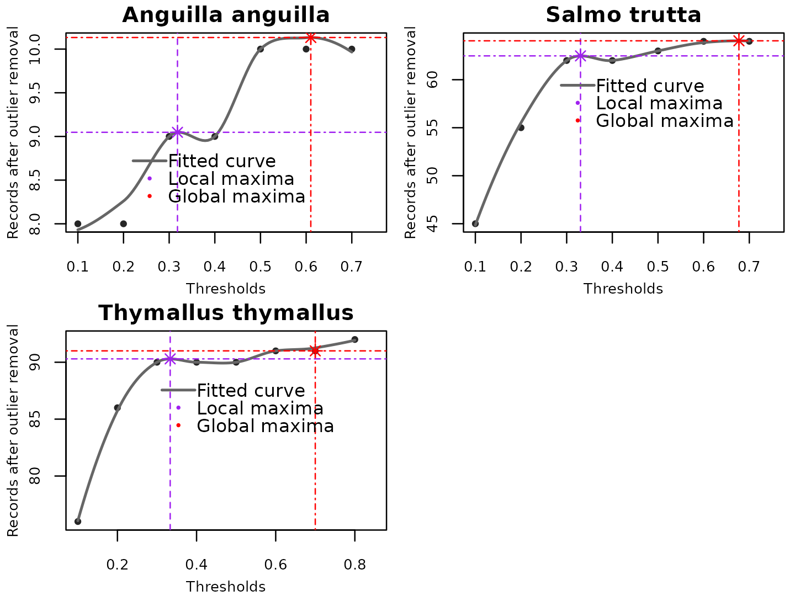

Optimising the LOESS method used for automatic identification of the outlier thresholds.
Source:vignettes/loessmethodoptimisation.Rmd
loessmethodoptimisation.RmdIdentifying the optimal threshold for identifying absolute outliers using the local regression method (LOESS).
In the speclceanr package, besides using the naive methods and data classification, we incorporated the local regression method (LOESS) in setting the optimal threshold to identify the absolute outliers. LOESS is a non-parametric scatterplot smoothing method that uses point-wise linear regression to smooth scatter plots (Cleveland 1979; Cleveland and Devlin 1988). Because it is a non-parametric method, the relationship between the independent and dependent variables should not be set beforehand (Jacoby 2000). It can reveal complex data patterns compared to traditional statistical methods (Jacoby 2000).
LOESS is less computationally intensive for small datasets, easy to compute, and highly resistant to outliers (Cleveland 1979). Therefore, we use it to predict the optimal threshold after modeling the relationship between the data points retained at each threshold. The thresholds for outlier detection range from 0 to 1 (0 means not an outlier or the record has not been flagged in any of the outlier detection methods used, and 1 represents a perfect outlier where the record has been flagged in all the methods). Therefore, at each threshold, the data points are retained or flagged out. Then, at the optimal threshold (global or local maximum), the data points retained are asymptotic, meaning no more records are flagged out. The optimal threshold is then used to retain the quality-controlled dataset used in further analysis.
Examples using fish species
Data processing: species and environmental variables
data(efidata)
data(jdsdata)
danube <- sf::st_read(system.file('extdata', "danube.shp.zip",
package = 'specleanr'), quiet=TRUE)
df_online <- getdata(data = c("Squalius cephalus", 'Salmo trutta',"Thymallus thymallus"),
extent = danube,
gbiflim = 50,
inatlim = 50,
vertlim = 50,
verbose = F)
mergealldfs <- match_datasets(datasets = list(efi= efidata, jds = jdsdata,
onlinedata = df_online),
country = c('JDS4_sampling_ID'),
lats = 'lat', lons = 'lon',
species = c('speciesname', 'scientificName'))
#Cleaning data
cleannames_df <- check_names(data = mergealldfs, colsp = 'species', pct = 90,
merge = TRUE, verbose = FALSE)
spfilter <- cleannames_df[cleannames_df$speciescheck %in%
c("Squalius cephalus", 'Salmo trutta',
"Thymallus thymallus","Anguilla anguilla",
'Barbatula barbatula'),]
worldclim <- terra::rast(system.file('extdata/worldclim.tiff', package = 'specleanr'))
#Get basin shapefile to delineate the study region: optional
danube <- sf::st_read(system.file('extdata', 'danube.shp.zip',
package = 'specleanr'), quiet=TRUE)Oultier detection, threshold optimisation using LOESS and plotting
par(mfrow = c(2, 2),
mar = c(3,3, 1.5, 0.5),
oma = c(0, 0, 0, 0),
mgp = c(1.7, 0.8, 0)
)
spp <- unique(spfilter$speciescheck)
pltout <- lapply(spp, function(s){
spout <- spfilter[spfilter[,'speciescheck'] %in%s,]
refdata <- pred_extract(data= spout, raster= worldclim,
lat = 'decimalLatitude',
lon = 'decimalLongitude',
colsp = 'speciescheck',
bbox = danube,
list= TRUE,
minpts = 10)
outdet <- multidetect(data = refdata, multiple = FALSE,
var = 'bio6', output = 'outlier',
exclude = c('x','y'),
methods = c('zscore', 'adjbox',
'logboxplot', 'distboxplot',
'iqr', 'semiqr','seqfences',
'hampel','kmeans',
'jknife', 'onesvm',
'iforest'),
warn = FALSE)
print(nrow(refdata))
opt <- optimal_threshold(refdata = refdata, outliers = outdet,
plotsetting = list(plot = TRUE, group = s))
opt
})
#> Warning: Number of rows are less than variables and some methods may not
#> function properly.
#> [1] 11
#> Warning: Number of rows are less than variables and some methods may not
#> function properly.
#> [1] 15
#> [1] 65
#> [1] 96
#> [1] 96
Summary explanation
To ensure the LOESS model was only fitted if a group or species had absolute outliers, we set a cutoff of 0.6. So, LOESS will not be fitted if outliers are not detected in less than half of the outlier detection methods. For example, in the figure above, the threshold was only optimized for Salmo trutta, Anguilla anguilla, and Thymallus thymallus. In Barbatula barbatula and Squalius cephalus the outliers with the highest weight was 0.41 and 0.5 respectively.
Simulating for small datasets less than 25 records
set.seed(11351)
a <- rnorm(20, 32, 1)
b <- rnorm(20, 4, 1)
c <- rnorm(20, 0, 1)
d <- rnorm(20, 6, 1)
#add outlier rows
out <- c(409, 43, 76, 23)
out1 <- c(-0.2409, 10, 43, 22)
out2 <- c(509, 0.43, 76, 23)
df <- data.frame(a, b, c, d)
df2 <- rbind(df, out, out1, out2)Outlier detection for small datasets
outdet2 <- multidetect(data = df2, multiple = FALSE,
var = 'a', output = 'outlier',
methods = c('zscore', 'adjbox',
'logboxplot', 'distboxplot',
'iqr', 'semiqr','seqfences',
'hampel','kmeans',
'jknife', 'onesvm',
'iforest'),
warn = FALSE)Visualize the threshold
opt1 <- optimal_threshold(refdata = df2, outliers = outdet2,
plotsetting = list(plot = TRUE))
opt1
#> localmaxima globalmaxima
#> 0.3343434 0.7000000- In the above scenario, the outlier detection exponentially increased and therefore absolute outliers were recorded denoted when the predictions exponetially increased.
References
- Cleveland, W. S. 1979. Robust Locally Weighted Regression and Smoothing Scatterplots. - J Am Stat Assoc 74
- Cleveland, W. S. and Devlin, S. J. 1988. Locally Weighted Regression: An Approach to Regression Analysis by Local Fitting. - J Am Stat Assoc 83
- Jacoby, W. G. 2000. Electoral inquiry section Loess: a nonparametric, graphical tool for depicting relationships between variables. - Elect Stud 19